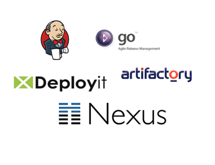

continous delivery
Bruno Dević, CROZ d.o.o.
WHY
PROBLEMS
stressfull releases
manual deployments
error-prone releases
no feedback
no feedback
CAUSE
WHAT
CONTINOUS DELIVERY
Set of practices and principles aimed at, building, testing and releasing software faster and more frequently.
Target is to reduce cost, time and risk required to release incremental changes to the customer.
AGILE MANIFESTO
Our highest priority is to satisfy the customer through early and continous delivery or valuable software.
LEAN
How long would it take your organization to deploy a change that involves just one single line of code? Do you do this on a repeatable, reliable basis?
CONTEXT
TARGET
- reduce cycle time
better planning
build the minimum viable product
reduce WIP
- reduce risk of release
increase quality
early integration
deploy less
- better project tracking
release frequently
done means done
BOTTOM LINE
releases must be boring
the system must always be releasable
every build is a potential release candidate
PERSPECTIVES
- techical - tools, infrastructure, arhictecture
- process - workflow, company culture and structure, people
interwoven, can't implement one without the other
not easy, we have the tools, but the process and architecture are difficule to change
it costs money to save money
HOW
PRACTICES
AGILE
definition of done
small development cycles
review meeting
planning for deployment
TOOLS
ARCHITECTURE
Feature Branching is a poor man's modular architecture, instead of building systems with the ability to easy swap in and out features at runtime/deploy time they couple themselves to the source control providing this mechanism through manual merging.
-- Dan Bodart
ARCHITECTURE
modular arhitecture
service based architecture
feature toggle
TOOLS
SOA
CONTINOUS INTEGRATION
frequent checkins (to trunk)
build is automated
build is fast
run automated tests
measure internal quality
deploy to an integration evironment
build is automated
build is fast
run automated tests
measure internal quality
deploy to an integration evironment
TOOLS
TYPES OF TESTS

TESTING
build quality into your system
test continously
test continously
decide what to test
have confidence in your tests
automated acceptance testing
offload testers
have confidence in your tests
automated acceptance testing
offload testers
TOOLS
CONFIGURATION MANAGEMENT
version everything
database
application configuration
infrastructure
dependencies
externalize configuration
have reproducable infrastructure
have reproducable infrastructure
devops
TOOLS
DEPLOYMENT PIPELINE
A deployment pipeline is an automated manifestation of your process for getting software from
version control into the hands of your customers.
visualisation and control over the process
DEPLOYMENT PIPELINE
JENKINS
DEPLOYMENT PIPELINE
chain of jobs
build once, deploy many
no environment specific build
deploy everything
push and pull
smoke testing
build once, deploy many
no environment specific build
deploy everything
push and pull
smoke testing
deploy to preprod
TOOLS

* Jenkins plugins: build pipeline, parametrized build, validated merge, clone workspace
DEPLOY TO PROD
blue-green deployments
canary releases
deployed != released
canary releases
deployed != released